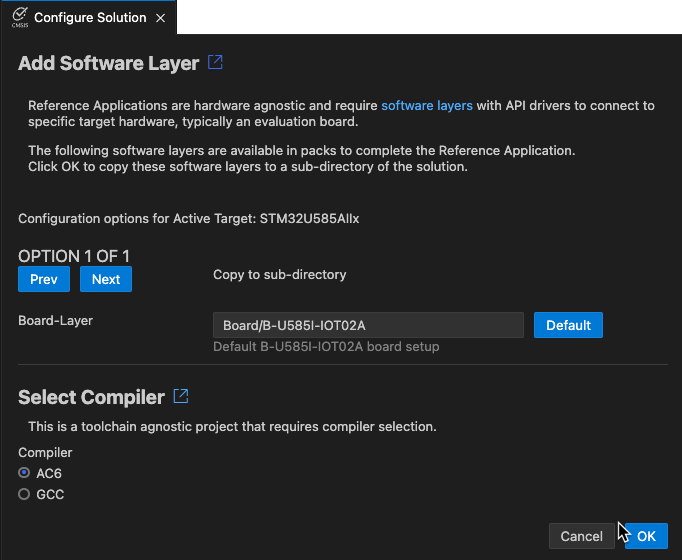

Configuration
Configure the extension
Press Ctrl+, (Windows and Linux) or Cmd+, (macOS) or go to  at the bottom of the Activity Bar and select Settings. Then, select CMSIS Solution to change the extension settings. The available settings are:
at the bottom of the Activity Bar and select Settings. Then, select CMSIS Solution to change the extension settings. The available settings are:
| Setting | Description |
|---|---|
| Actions | Set run and debug configurations for your solutions and projects. |
| Download Packs | CMSIS-Toolbox downloads required software packs using cpackget during setup and project build. This option enables the option --packs for cbuild. |
| Exclude | Configure a glob pattern for excluding files and folders in searches for csolution files. |
| Experimental Features | Use the checkbox to enable experimental features. |
| Generate Clang Setup | Use the checkbox to automatically generate the required setup (.clangd file and .vscode/settings.json) for the active solution context. For Arm Compiler 6, include pre-defined macros in the .clangd file. |
| Output Directory | Enter an output directory prefix for 'outdir' and 'tmpdir' and relocated build information files (experimental). |
| Use Web Services | Use the checkbox to enable web services to obtain information about devices, boards, and examples. If enabled, information from the internet and locally installed packs is used. If disabled, only information from installed packs is used. |
Configure a solution
If you have not already set a compiler, select a compiler for your solution from the Configure Solution view. If you created a reference application from a reference example, you can also add layers to your solution from the same view.
If your project has a select-compiler: node, but no compiler: node is set in the csolution.yml file, or if your
reference application has no layers defined, then the Configure Solution view opens automatically.
If you are working with a reference application, Add Software Layer displays, showing the software layers that you can use. Layers are available from the CMSIS-Packs installed on your machine.
Note
- Not all Board Support Packs (BSPs) have board layers.
- Not all layers are compatible with the connections that your reference application requires.
- The CMSIS-Packs which contain reference applications and layers generally provide an
Overview.mdfile where the connections are detailed.
If there are no compatible layers, errors display.

-
Click Next to display the different options available.
-
You can indicate where the layers should be copied to in the Board-Layer, Shield-Layer, and Socket-Layer fields. Click Default to reset the paths to their default values.
-
If no compiler is set for the reference application, Select Compiler displays under the layers selection and shows the compilers available in your environment. Select a compiler. For example, AC6 or GCC.
-
If you are working with another solution type, only Select Compiler displays. Select a compiler.
-
Click OK.
For reference applications only, a Board.clayer.yml file, a Shield.clayer.yml file, or a Socket.clayer.yml file, along
with other files that make up the layer, are added in the folders that you selected. The files are available from the
Explorer view. The .clayer.yml files come from the CMSIS-Pack. Layers are automatically added in the csolution.yml
file of your solution under target-types: variables: for the active target.
For all solution types, the compiler is added with the compiler: key in the csolution.yml file.
Configure a build task
In VS Code, you can automate certain tasks by configuring a tasks.json file. See
Integrate with External Tools via Tasks for more details.
With the CMSIS Solution extension, you can configure a build task using the tasks.json file to build your projects. When
you run the build task, the extension runs cbuild with the options that you defined.
Note
The examples on keil.arm.com include a tasks.json file that already contains some configuration settings to build
your project. You can modify the default configuration if needed.
If you are working with an example that does not have a build task configured, follow these steps:
-
Go to Terminal > Configure Tasks....
-
In the drop-down list that opens at the top of the window, select the CMSIS Build task. A
tasks.jsonfile opens with the default configuration. -
Modify the configuration.
With IntelliSense, you can see the full set of task properties and values available in the tasks.json file. You can bring
up suggestions using Trigger Suggest from the Command Palette. You can also display the task properties specific to
cbuild by typing cbuild --help in the Terminal.
- Save the
tasks.jsonfile.
Alternatively, you can define a default build task using Terminal > Configure Default Build Task.... The Terminal > Run Build Task... option triggers the execution of default build tasks.
Configure Run and Debug
When using the CMSIS-Toolbox 2.9.0, the Run and Debug Management file *.cbuild-run.yml provides all information to configure programmers or debuggers.
With this information the CMSIS Solution extension generates the launch.json and tasks.json configuration files for the
run and debug features of VS Code.
Note
The generation of the launch.json and tasks.json files is enabled when the csolution project contains a target-set: node. Using target-set: uses the cbuild command option --active to select the configuration. The option --context-set and the file *.cbuild-set.yml is no longer used.
In VS Code, there are two debug request modes that can be configured in launch.json:
- Launch starts a debug session and typically stops at the main function.
- Attach connects a debug session to a running system.
Example
The following *.csolution.yml file is configured for a CMSIS-DAP Debugger as shown below. Refer to the CMSIS-Toolbox users guide for details on target-set.
solution:
:
target-types:
- type: MyBoard_ROM # My evaluation kit (Execution from ROM)
board: B-U585I-IOT02A # Board name as defined by the pack
target-set:
- set: # default configuration
debugger:
name: CMSIS-DAP # uses CMSIS-DAP
The related *.cbuild-run.yml file contains the information for the debugger setup. The CMSIS Solution extension uses this information with a template file for a debug adapter (in this case for CMSIS-DAP) to update the configuration information in launch.json and tasks.json.

ToDo: add the generated launch.json + tasks.json from this example
User Modifications to launch.json
By default, the CMSIS Solution extension updates the launch.json file to reflect the settings in the csolution project. Sometimes the user needs control over settings. The cmsis: - updateConfiguration: value in the launch.json file controls the update. Remove auto to manually control the settings and this section.
"cmsis": {
"pname": cm33_core0
"target-type": MCXN947
"updateConfiguration": auto // without auto, this section is not modified
Template Files
Template files for various debug adapters are included in the installation. For reference the template files are provided in the Debug Adapter Registry.
A template file in *.json format contains the following sections:
"launch": // section for launch.json
"singlecore-launch": // debugger launch request for single-core system
"singlecore-attach": // debugger attach request for single-core system
"multicore-start-launch": // debugger launch request for the start processor in multi-core system.
"multicore-start-attach": // debugger attach request for the start processor in multi-core system.
"multicore-other": // debugger attach request for other processors in multi-core system.
"tasks": // section for tasks.json
"label": "CMSIS Load+Run", // command "CMSIS Load+Run"
"label": "CMSIS Run", // command "CMSIS Run"
"label": "CMSIS Load", // command "CMSIS Load"
"label": "CMSIS Erase", // command "CMSIS Erase"
The template files are processed with the Eta template engine. It inserts data of the *.cbuild-run.yml file into the various sections of the template file using placeholders listed in the table below. Each section is processed depending on the system type.
| Placeholder | Description |
|---|---|
solution_folder |
Relative path from the workspace folder to the directory that stores the *.csolution.yml file |
device_name |
From *.cbuild-run.yml: value of device: |
target_type |
From *.cbuild-run.yml: value of target-type: |
start_pname |
From *.cbuild-run.yml: value of start_pname: |
image_files |
From *.cbuild-run.yml: value list of output: with image information |
symbol_files |
From *.cbuild-run.yml: value list of output: with symbols information |
pname |
Processor name in a multi-core system that is currently processed by the template engine |
ports |
From *.cbuild-run.yml: value list of gdbserver: |
The usage of these placeholders is exemplified with the template files in the Debug Adapter Registry.
Enhancing the Debug Experience
To ensure the best debug experience with Arm Compiler for Embedded, make sure that your CMSIS solution files contain the following.
csolution.yml
In the *.csolution.yml file, insert the following block in - target-types\- type section:
target-set:
- set:
debugger:
name: # set to name of your debug adapter
Insert the following before the - projects section:
misc:
- for-compiler: AC6
C-CPP:
- -gdwarf-5
ASM:
- -gdwarf-5
Link:
- --entry=Reset_Handler
cproject.yml
In the *.cproject.yml file, add at the end:
output:
type:
- elf
- hex
- map